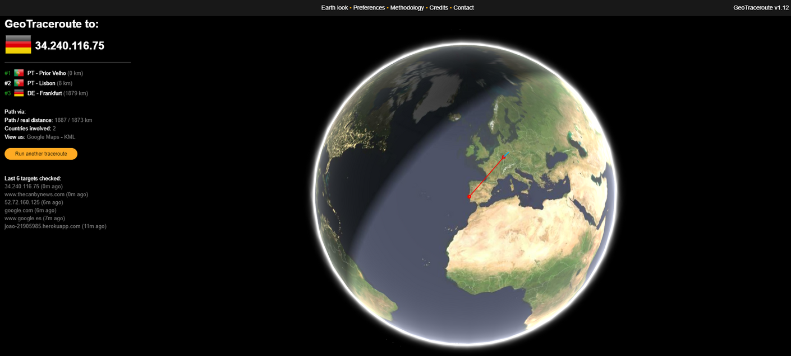
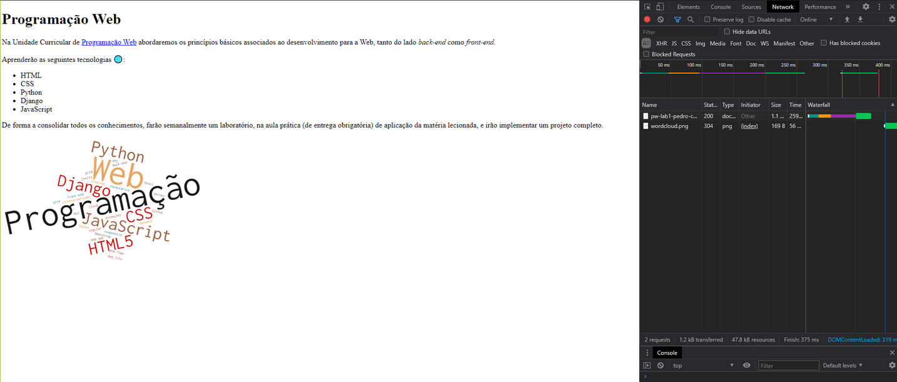

Ao aceder ao site What Is My IP obtive o IP e a minha localização, verifiquei támbem que fazendo o mesmo no telémovel, utilizando dados moveis obtive um IP completamente diferente.
Como se vê nas seguintes imagens:


Utilizando a linha de comandos e o comando tracert vi a rota que o IP da minha app faz, identificando os router pelos quais os pacotes passam desde o meu PC até ao endereço de destino.
Verifiquei também que a partir do 8 deu sempre "Request timed out." Como se pode verificar:

Pegando no IP da app "34.240.116.75" e o site Geo Traceroute, escolhendo Portugal como destino de origem, obtive que o meu servidor Heroku está localizado em Frankfurt, Alemanha.
Neste passo carregei ctrl + u que fez com que visse o código fonte. Que é exatamente igual ao código escrito no index.html
Ao fazer "Inspect" da página vesse que foram descarregados 2 ficheiros, o tempo que cada um demorou a carregar, o tipo e o tamanho de cada um.
Selecionando cada um e verificando a tab preview, headers e timing.